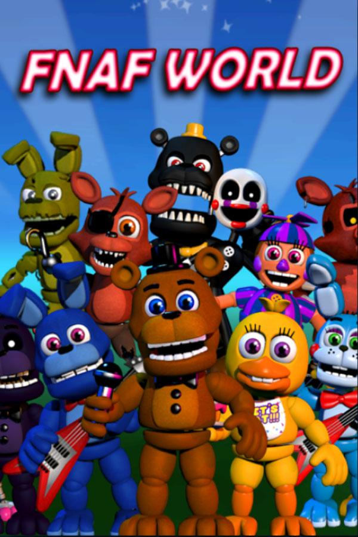

|  | |
| Playtime | Not Played |
| Last Activity | Never |
| Added | 5/1/2025 2:51:33 |
| Modified | 5/1/2025 4:27:07 |
| Completion Status | Not Played |
| Library | Playnite |
| Source | |
| Platform | $PC (Windows) |
| Release Date | 1/21/2016 |
| Community Score | |
| Critic Score | |
| User Score | |
| Genre | RPG |
| Developer | Scott Cawthon |
| Publisher | Scott Cawthon |
| Feature | Single Player |
| Links | PCGamingWiki Official site SteamDB Wikipedia |
| Tag | Bird's-eye view Cartoon Clickteam Fusion 2.5 Naval/watercraft Pre-rendered graphics Real-Time Side view Turn-Based |
FNaF World (/fəˈnæf/ fə-NAF) is a 2016 indie adventure role-playing video game created by Scott Cawthon. It is the first official spin-off to the Five Nights at Freddy's series and the fifth game overall. The game was initially released for Windows via Steam on January 21, 2016, and for Android on January 12, 2017, but has since been taken down from those two platforms and re-released as freeware on Game Jolt.
The original Steam release was met with negative reviews and backlash because of the game's unfinished state and technical issues, leading Cawthon to temporarily remove it from the platform in order to address these issues. An updated version of the game was released on February 8, 2016, on Game Jolt free of charge. It was later re-released on Steam, but removed again in 2017, this time permanently. Ultimately, the game received mixed reviews and is considered to be the weakest title in the series, despite it gaining a small cult following in the years following its release.
FNaF World is a role-playing game featuring two modes: Adventure and Fixed Party. It also has two difficulty levels to choose from, Normal and Hard. The player starts by choosing two parties consisting of four characters each. The starter characters can all be swapped in and out of the party. As the player continues, they collect more characters to place in their party, with there being 40 characters available in total from across the first four games. Along the way, a character known as Fredbear will give the player tips on what to do next. These tips frequently break the fourth wall due to Fredbear's seeming awareness of the situation he is placed in.
The gameplay consists of exploring the game world and accessing new areas. Once new areas are revealed and a special button is pressed in them, the player can teleport between each area through an overworld map. Many enemy characters can be found throughout the game, each exclusive to their own area, which can be battled with. Upon defeating an enemy, the player will gain experience points and "Faz Tokens", which are used to buy upgrades such as "bytes" to aid the player during the game.
The battles consist of turn-based random encounters, with several boss battles. For each turn, the player is given choices for each character and must choose one of their three commands, which differ depending on the characters. The commands have different color tags and have different impacts, including healing the team (pink), providing status buffs (white), single-target attacks (orange), area attacks (red), poisonous attacks (green), and possible instant-kill attacks (black), among others. Once a turn is used, the player has to wait for some time until the next turn begins. The player can also swap the current party with the reserve at any time. After each battle, all characters, including those who may have been knocked out, are restored to full health.
FNaF World was first announced on September 15, 2015, in a Steam post by Cawthon. Later, a trailer was uploaded to YouTube. The announcement was considered to be a hoax due to similar PR actions taken by Cawthon, however, it was not disproven until its release. Cawthon noted that the game is a spin-off, considering the main plotline of Five Nights at Freddy's completed with the fourth game. Originally planned for release on February 2, 2016, Cawthon later changed the date to January 22, 2016, only to end up releasing the game one day earlier, on January 21, via Steam.
Upon release, the game received very strong criticism for missing key features and its unstable and generally unfinished state, which Cawthon later apologized for, stating that "[he] got too eager to show the things that were finished, that [he] neglected to pay attention to the things that weren't." He agreed with the community that he had rushed the release, and that the game's rough state was unacceptable. Cawthon stated that he would be working hard to get the game in order, but this eventually led to Cawthon temporarily taking the game off Steam, offering refunds to everyone who bought it. It was later announced that, once the game would be patched further, it would be released as freeware, first to Game Jolt, and stay free from that point on. The Game Jolt version was released on February 8, 2016, and includes a new overworld and other features absent from the original release.
On May 13, 2016, a second update to FNaF World was released, featuring new characters and a new map, as well as voice acting.
On January 12, 2017, FNaF World was released on Android, but was removed the next day. On January 31, 2017, Cawthon dispelled any rumors of the highly speculated "Update 3", saying that no further updates will be made to the game. He expressed his dissatisfaction of the game, stating that most mistakes in development were made "very early", and that attempting to better the game would "be remaking the game from scratch". He later removed the game from Steam.
In a 2018 interview, Cawthon revealed that after making the first Five Nights at Freddy's games that were horror in nature, he wanted to do something lighthearted with FNaF World. It was originally designed to be a mobile game but halfway into development, it became a PC game, which was something Cawthon later regretted. In hindsight, he felt the game should have been developed in later years as he felt it disrupted the series' canon and fans' expectations at the time. He described FNaF World as the least profitable game he has ever made and as such, it served as the "gemstone" of quality control to the franchise. Despite the major setback, Cawthon was grateful for the fanbase it had created.
FNaF World had a generally mixed reception among critics and fans of the series, with many YouTubers responsible for launching Five Nights at Freddy's to mainstream popularity expressing their disappointment with the game. Markiplier, often regarded as one of the most popular and influential content creators to have covered the series, opted not to play FNaF World, likely influencing how many players responded to the spin-off. However, Angelo M. D'Argenio from The Escapist gave the game a decent review, stating that "Five Nights at Freddy's World is a retro parody JRPG that feels incomplete now, but is steadily getting better as patches come out", ultimately giving it a score of 3 out of 5 stars. The game ultimately failed to reach the level of success that other Five Nights at Freddy's titles did.